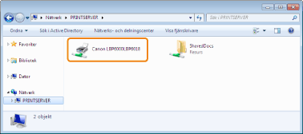

|
|
|
|---|
|
Lösning
|
Registrera användaren av datorn eller ange lösenordet på skrivarservern.
Mer information kan lämnas av nätverksadministratören.
|
|
Lösning 1
|
Kontrollera skrivarna på skrivarservern.

Om ikonen för den här skrivaren inte visas
Fråga din nätverksadministratör.
Om ikonen för den här skrivaren visas
Installera skrivardrivrutinen på något av följande sätt och följ anvisningarna på skärmen.
Dubbelklicka på den här skrivarens ikon
Dra och släpp ikonen för den här skrivaren i mappen Skrivare
|
|
Lösning 2
|
Om du vill ange en nätverkssökväg direkt kontrollerar du att nätverkssökvägen anges på rätt sätt som "\\skrivarserverns namn (skrivarserverns datornamn)\namnet på skrivaren".
|